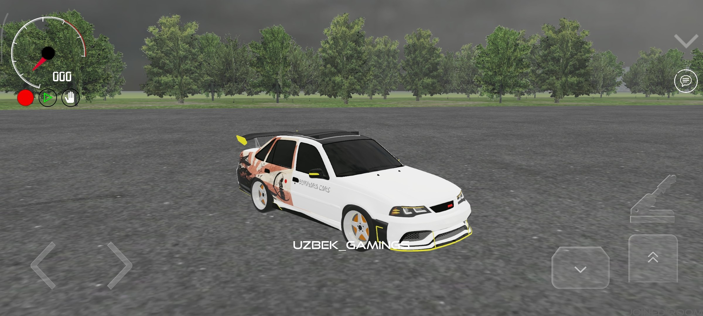
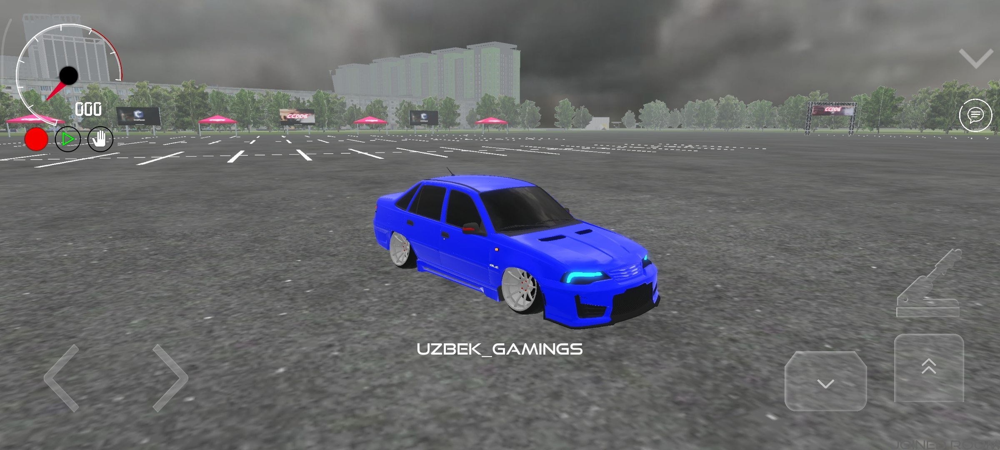
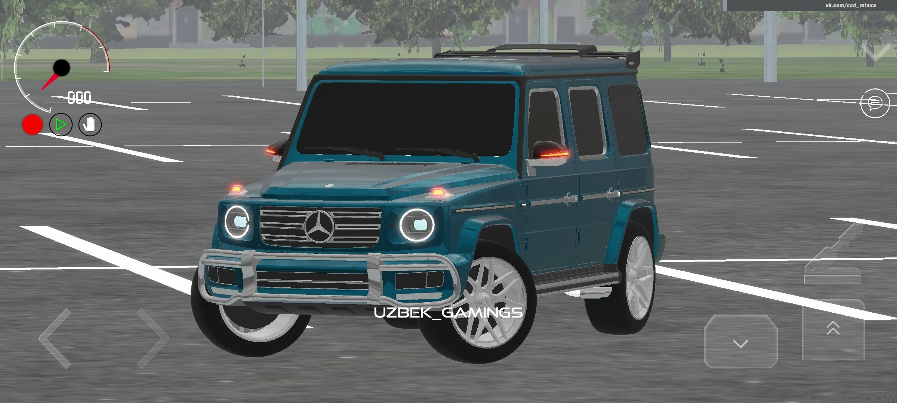
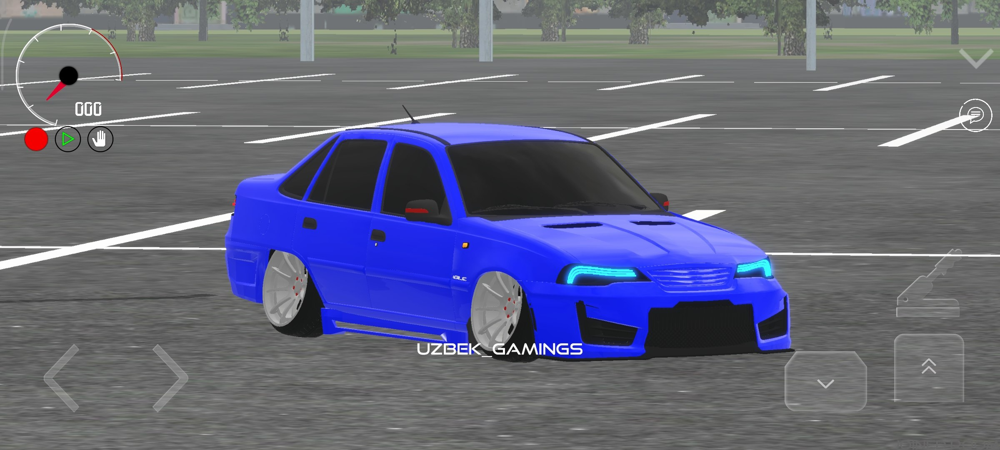
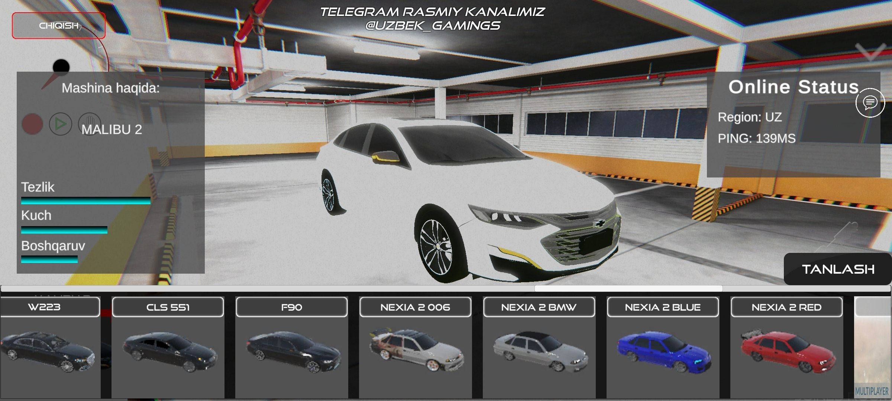
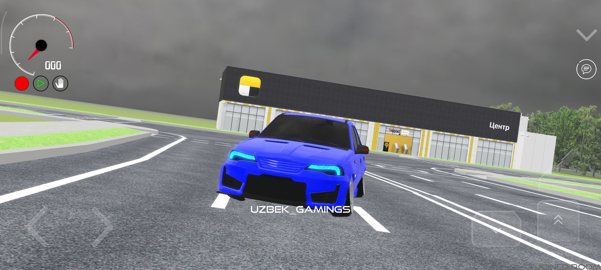
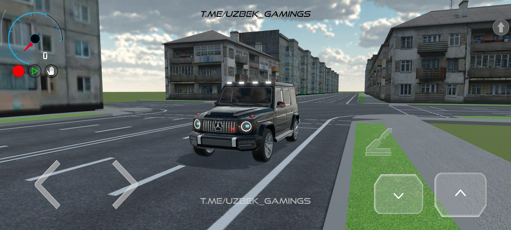

DEVELOPED BY THE_ABDULLAYEV







Uzbek Gamings loyihasi — bu haqiqiy o'zbek muhitini o'zida jamlagan ilk professional mobil o'yinlardan biri. Yuqori grafika, qiziqarli syujet va doimiy yangilanishlar sizni kutmoqda. Hozirda bizning hamjamiyatimiz kundan-kunga kengayib bormoqda!
Hajmi: 623 MB | Versiya: 5.3.2